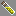

Ashes
Ashes Gray Dye
Gray Dye Ashes
Ashes| Item | Base Item | Creation Steps |
| Ashes |
Gray Dye |
Ashes |
| Item | Base Item | Creation Steps |
| Creeper Hide |  Leather Leather |
Creeper Hide |
| Item | Base Item | Creation Steps |
| Calamari |  Fish(Cooked) Fish(Cooked) |
Calamari |
| Item | Base Item | Creation Steps |
| Cursed Diamond (Reduces HP to 1 heart when in main or offhand slot) |  Diamond Diamond |
Cursed Diamond
 Thorns(any lv) Thorns(any lv)
|
| Vial of Glowstone |  Glowstone Glowstone |
Vial of Glowstone |
| Vial of Redstone |  Redstone Dust Redstone Dust |
Vial of Redstone |
 Witch's Thumb Witch's Thumb |
 Rotten Flesh Rotten Flesh |
Witch's Thumb |
| Item | Base Item | Creation Steps |
 Carbon Bone Carbon Bone |
 Coal Coal |
Carbon Bone |
| Item | Base Item | Creation Steps |
 Zombie Bacon Zombie Bacon |
Rotten Flesh |
Zombie Bacon |